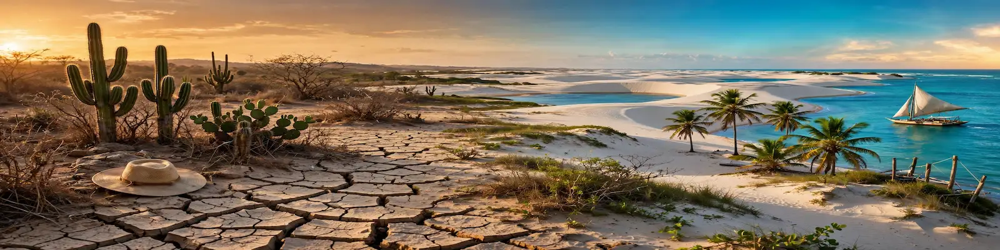
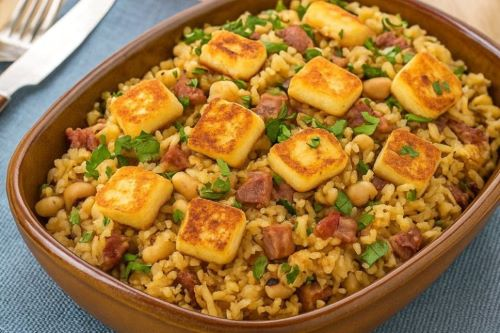

Do Chão Rachado ao Mar Infinito
Um portal que conecta a resistência do sertão à beleza do litoral nordestino.
Explorar SaboresVisitas: 0
Por que este portal?



Um portal que conecta a resistência do sertão à beleza do litoral nordestino.
Explorar SaboresVisitas: 0
